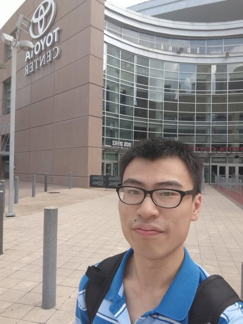

THEME 01
Datacenter–Grid Decoupling
Decoupling datacenter power capacity from grid load using energy resources (e.g., storage, generators) to unlock grid load flexibility, ease reliability constraints, and accelerate decarbonization.
林刘子轩 · /lin lieu tzi shuan/
I received my Ph.D. in Computer Science from the University of Chicago in December 2025, advised by Prof. Andrew A. Chien. My research lies at the intersection of Systems and Data Analytics, with a focus on decoupling and coordinating AI datacenters with renewable-dominated power grids.
Previously, I received my B.S. in Computer Science from Peking University in 2019, with a double major in Economics.

Decoupling datacenter power capacity from grid load using energy resources (e.g., storage, generators) to unlock grid load flexibility, ease reliability constraints, and accelerate decarbonization.
Rethinking grid planning and cloud management for exploding AI power demand and designing techniques to reduce the carbon impact of generative AI inference.
Data-driven modeling of datacenter–grid coupling, automated classification of power plants by generation type, and characterization of stranded renewable power.
We explore decoupling datacenter power capacity and grid load using energy resources (e.g., storage, generator) to create datacenter grid load flexibility. Further, we explore the use of decoupling more broadly to ease reliability constraints (datacenter growth) and accelerate decarbonization. This dissertation is part of the broader Zero-carbon Cloud project.
@inproceedings{lin2025middlebox,
author = {Lin, Liuzixuan and Chien, Andrew A.},
title = {Middlebox: Unlocking Datacenter Growth and Grid Decarbonization},
booktitle = {Proceedings of the ACM Symposium on Cloud Computing (SoCC '25)},
year = {2025},
doi = {10.1145/3772052.3772220}
}
@inproceedings{lin2024exploding,
author = {Lin, Liuzixuan and Wijayawardana, Rajini and Rao, Varsha and Nguyen, Hai and Gnibga, Wedan Emmanuel and Chien, Andrew A.},
title = {Exploding AI Power Use: an Opportunity to Rethink Grid Planning and Management},
booktitle = {Proceedings of the 15th ACM International Conference on Future and Sustainable Energy Systems (e-Energy '24)},
year = {2024},
doi = {10.1145/3632775.3661959}
}
@inproceedings{lin2023adapting,
author = {Lin, Liuzixuan and Chien, Andrew A.},
title = {Adapting Datacenter Capacity for Greener Datacenters and Grid},
booktitle = {Proceedings of the 14th ACM International Conference on Future Energy Systems (e-Energy '23)},
year = {2023},
doi = {10.1145/3575813.3595197}
}
@inproceedings{chien2023reducing,
author = {Chien, Andrew A. and Lin, Liuzixuan and Nguyen, Hai and Rao, Varsha and Sharma, Tristan and Wijayawardana, Rajini},
title = {Reducing the Carbon Impact of Generative AI Inference (today and in 2035)},
booktitle = {Proceedings of the 2nd Workshop on Sustainable Computer Systems (HotCarbon '23)},
year = {2023},
doi = {10.1145/3604930.3605705}
}
@inproceedings{chien2022beyond,
author = {Chien, Andrew A. and Zhang, Chaojie and Lin, Liuzixuan and Rao, Varsha},
title = {Beyond PUE: Flexible Datacenters Empowering the Cloud to Decarbonize},
booktitle = {Workshop on Sustainable Computer Systems Design and Implementation (HotCarbon '22)},
year = {2022}
}
@inproceedings{lin2021evaluating,
author = {Lin, Liuzixuan and Zavala, Victor M. and Chien, Andrew A.},
title = {Evaluating Coupling Models for Cloud Datacenters and Power Grids},
booktitle = {Proceedings of the 12th ACM International Conference on Future Energy Systems (e-Energy '21)},
year = {2021},
doi = {10.1145/3447555.3464868}
}
@inproceedings{lin2020automated,
author = {Lin, Liuzixuan and Chien, Andrew A.},
title = {Automated Classification of Power Plants by Generation Type},
booktitle = {Proceedings of the 11th ACM International Conference on Future Energy Systems (e-Energy '20)},
year = {2020},
doi = {10.1145/3396851.3397708}
}
@techreport{lin2020characterizing,
author = {Lin, Liuzixuan and Chien, Andrew A.},
title = {Characterizing Stranded Power in the ERCOT in Years 2012-2019: A Preliminary Report},
institution = {Department of Computer Science, University of Chicago},
number = {TR-2020-06},
year = {2020}
}